Glaces artisanales élaborées avec des produits frais et locaux, jus de fruits, smoothies, crêpes, gaufres, thé et café — à déguster sur place ou à emporter à Saint-Gilles les Bains.
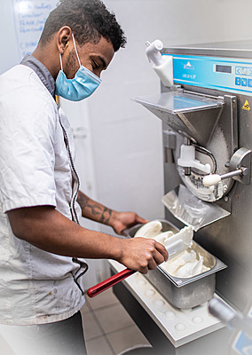
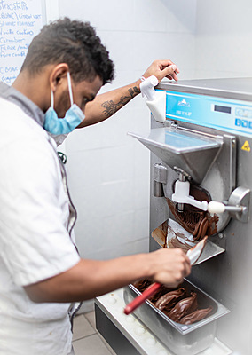
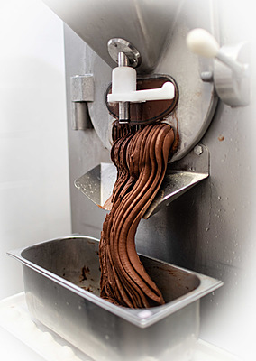
Découvrez nos glaces artisanales élaborées avec des produits frais et locaux, ainsi que notre large choix de jus de fruits frais, smoothies, crêpes, gaufres, thé et café.
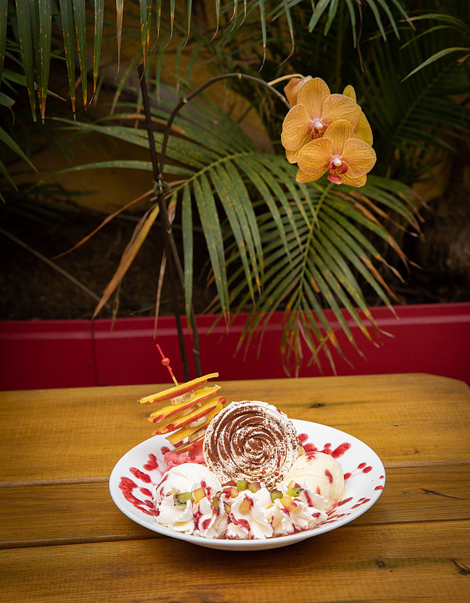
Votre glacier Marie B vous accueille depuis 12 ans à Saint-Gilles les Bains de la Réunion, dans un cadre chaleureux pouvant accueillir jusqu'à 60 personnes.
Que ce soit pour une pause gourmande en famille, entre amis ou en amoureux, notre équipe vous réserve le meilleur accueil dans une ambiance conviviale et colorée.
Profitez d'un espace confortable pour déguster vos glaces sur place.
Situés 13 Rue de la Poste, facilement accessibles depuis la plage.
Toutes nos créations sont disponibles à emporter pour vos pique-niques.
Une équipe de professionnels passionnés prépare nos crèmes glacées et pâtisseries de manière artisanale dans notre laboratoire, en sélectionnant soigneusement des produits locaux et de qualité.
Des fruits locaux cueillis à maturité et des ingrédients soigneusement sélectionnés pour chaque recette.
Nos artisans glaciers préparent chaque jour vos glaces fraîches dans notre laboratoire sur place.
Pas de conservateurs, pas d'arômes artificiels — seulement le goût authentique des produits locaux.
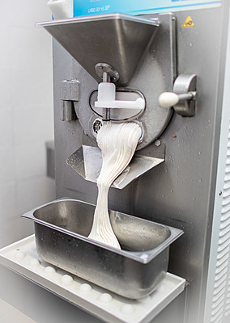
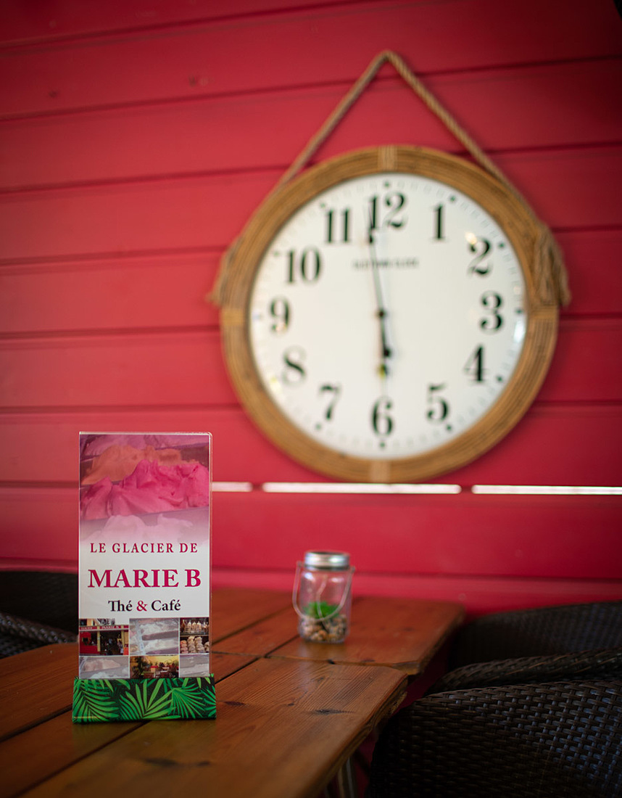
Commandez nos délicieux vacherins et omelettes norvégiennes, des entremets glacés uniques préparés sur demande. Parfaits pour vos célébrations, anniversaires ou simplement pour vous faire plaisir.
Chaque vacherin est réalisé à la main par notre équipe, avec les glaces artisanales de notre laboratoire et les meringues préparées sur place pour un résultat exceptionnel.
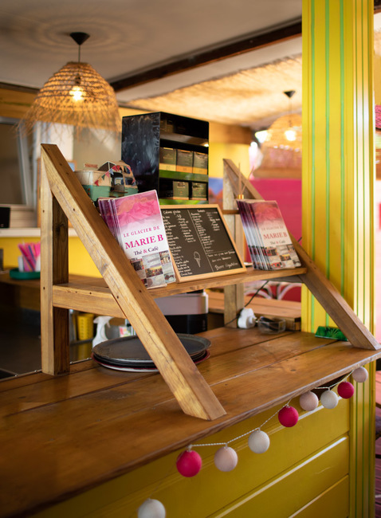
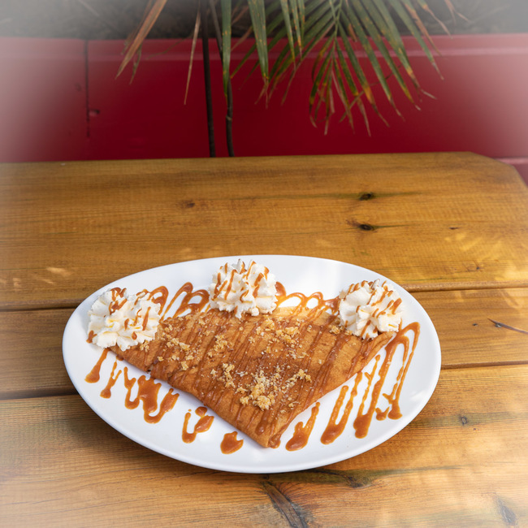
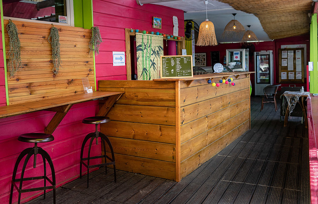
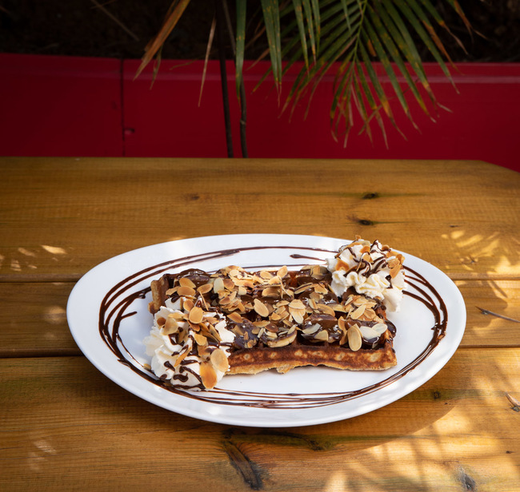
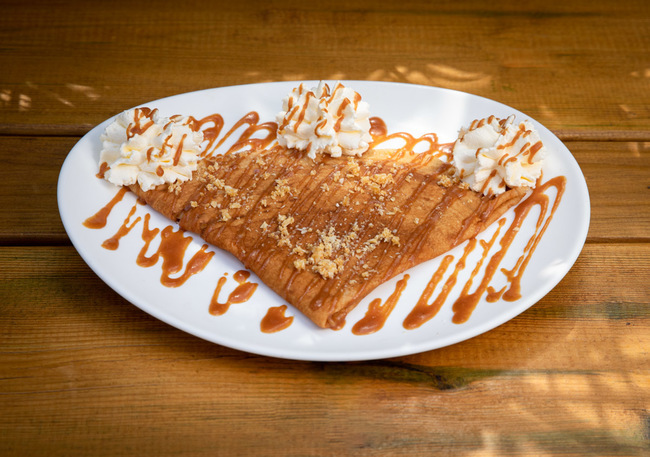
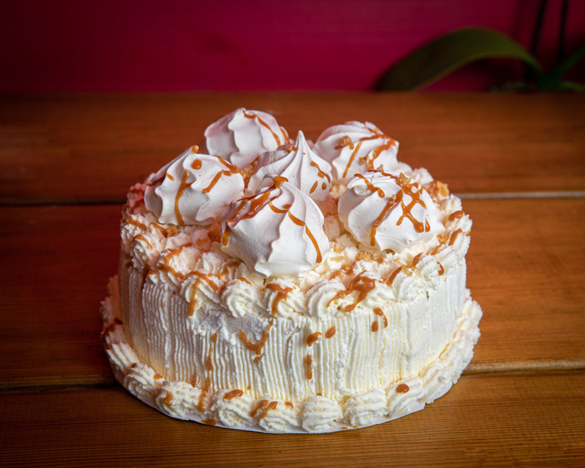
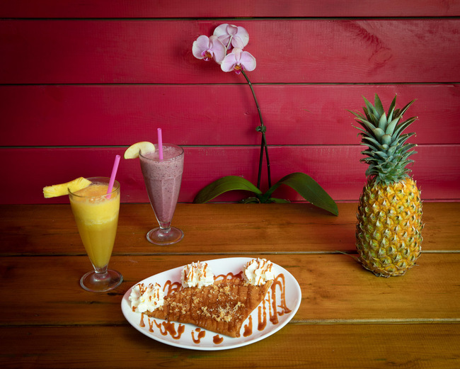